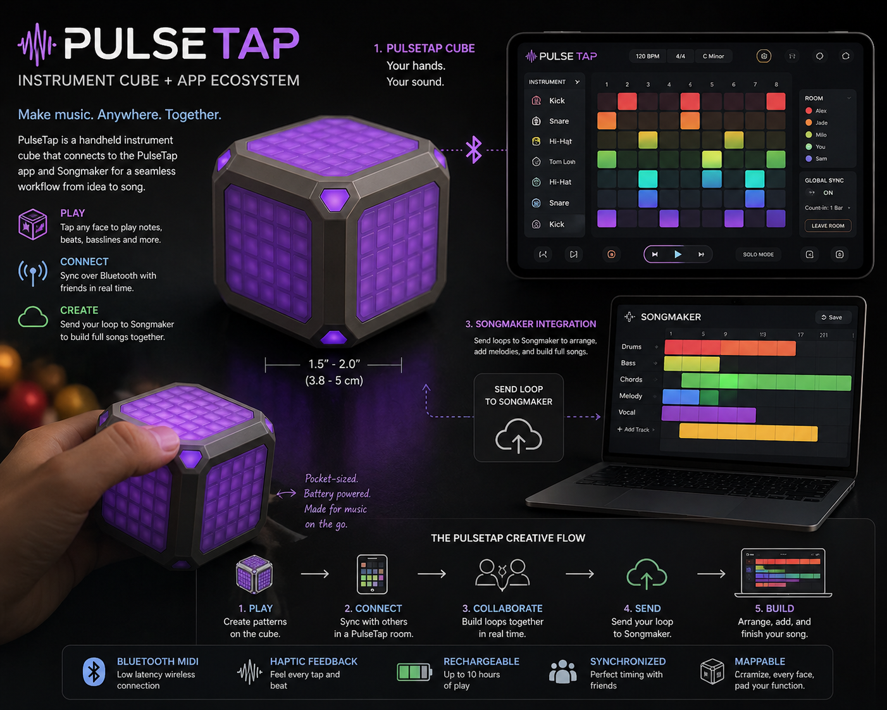
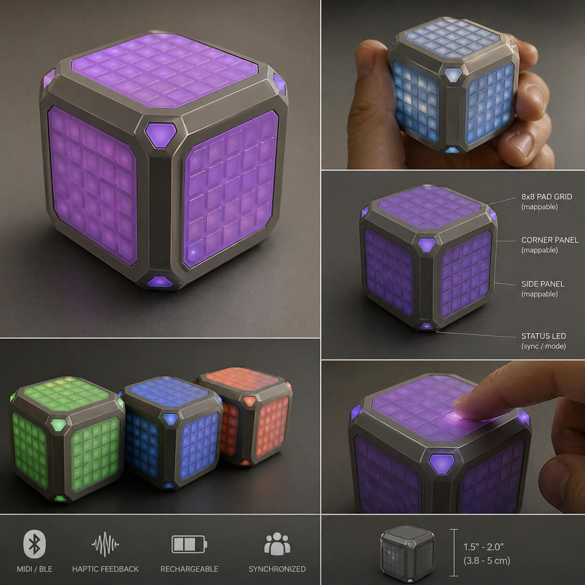
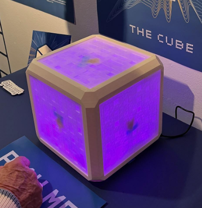

Live Play
Tap, improvise, audition ideas, and perform freely.
Instrument cube + collaborative music room + Songmaker
PulseTap began as a simple dream: give Lucy, Dax, Conor, and me a way to make music together from anywhere — not just by pressing play, but by actually performing, looping, shaping, and building songs in real time.

A rhythm shows up on the bus. A melody appears while walking. A bass idea happens between classes. Usually those moments disappear because the tool is too heavy, too complicated, or too disconnected from the people who might help finish it.
PulseTap is designed for that exact moment. The cube becomes a small, tactile instrument. The app becomes the shared room. Songmaker becomes the place where those sparks are arranged into something complete.
The outer brace protects the cube and creates recessed panels for touch-sensitive square pads. Each side can become an instrument, loop layer, effect surface, or control map. Corner panels are not decoration — they are mappable controls for mode, sync, record, send, mute, or shift functions.

PulseTap separates two musical behaviors that should feel different: live play and loop mode. Live play is immediate and expressive. Loop mode is synchronized, count-based, and shared. When someone adds a loop, everyone hears it land on the same musical grid.
Tap, improvise, audition ideas, and perform freely.
Prepare patterns and launch them on the global count.
Choose your own key, tempo, mode, and practice privately.
Connect multiple players to one shared musical clock.
PulseTap is where the idea is performed. Songmaker is where the idea becomes a song. A loop created on the cube can be sent into Songmaker as a drum part, bass part, melody, chord layer, or texture.
This early cube image captures the core design language: a glowing center, protective outer frame, recessed panels, and the feeling that the object is both instrument and artifact.
